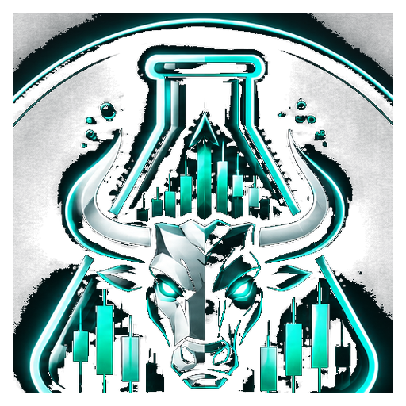
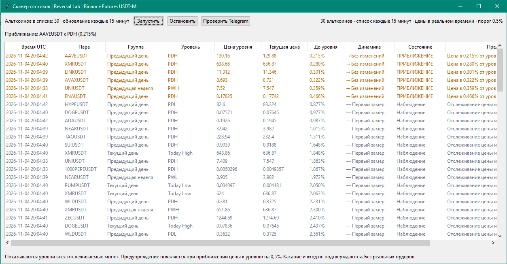
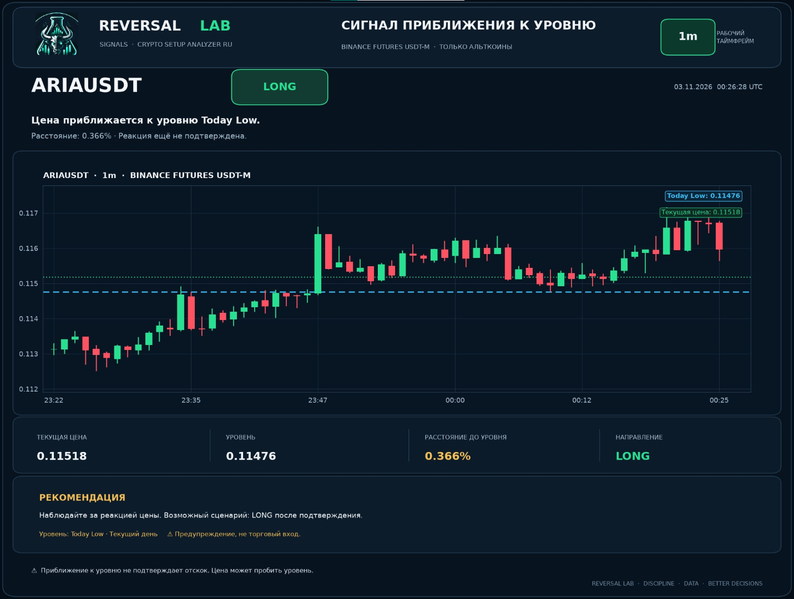

Live market monitoring
REST market data and WebSocket ticker updates for selected USDT-M perpetual altcoin contracts.

REVERSAL LABMonitor selected Binance USDⓈ-M altcoin contracts, track price approaches to reference levels, classify closed one-minute candle reactions and deliver visual event cards to Telegram.
The application is built around observation and evidence. It records what happened at a level rather than placing orders or promising a trading outcome.
REST market data and WebSocket ticker updates for selected USDT-M perpetual altcoin contracts.
Tracks supported daily, weekly and local reference levels, with configurable approach distance and repeat-alert hysteresis.
Rule-based one-minute rejection classification using candle body, wick-to-body ratio and close position.
Separate cards for level approach and confirmed reaction, rendered from actual closed Binance Futures klines.
SQLite persistence for recorded events and virtual-trade data structures, without live exchange orders.
Unit tests cover scanner rules, storage, card generation, notification queue and backtest behaviour.
The scanner and Telegram delivery bridge run as separate processes. This keeps notification routing independently configurable.
Authentic captures supplied from the running application: the market analyzer, altcoin scanner and Telegram event cards.





Crypto futures are high-risk instruments. This project is a monitoring and research application. It makes no profitability claim and does not execute trades in this release. Market data may be delayed, unavailable or rate-limited.